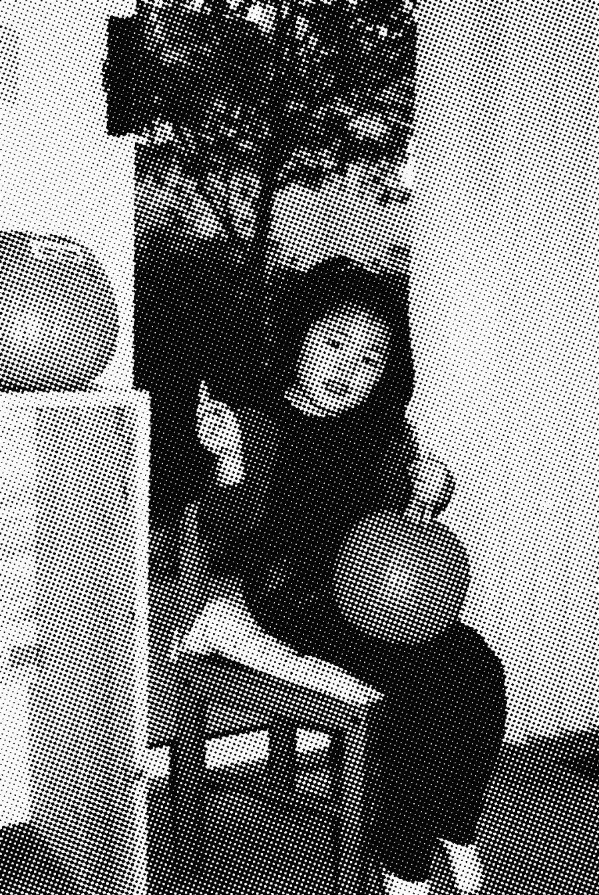
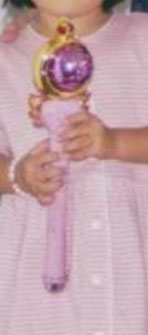
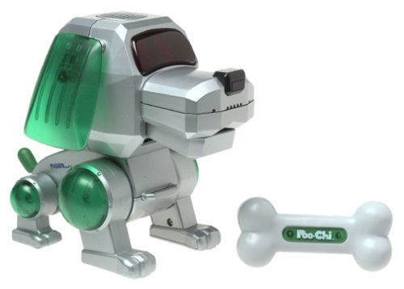
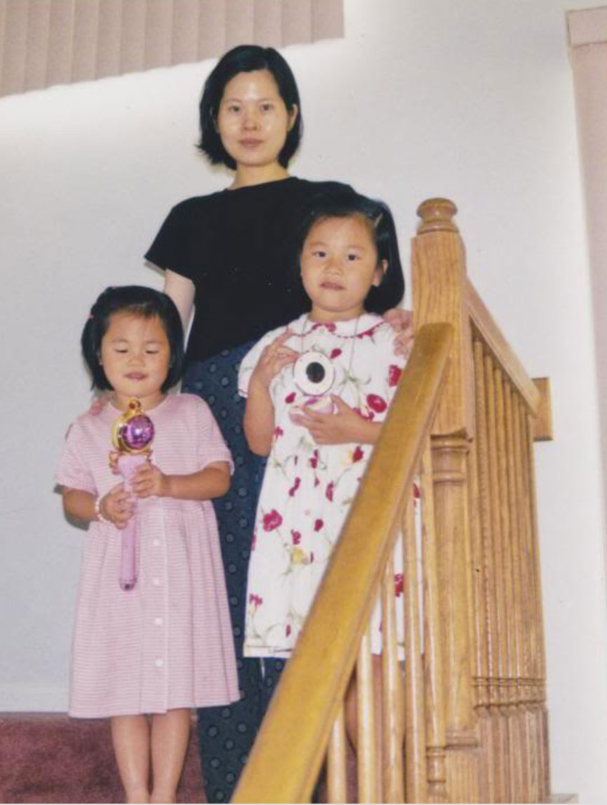
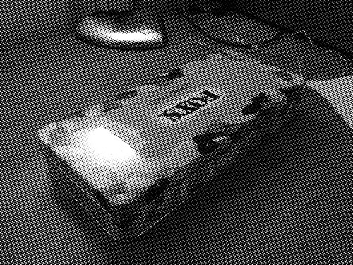
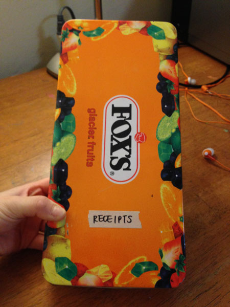

collection
nostalgia / tradition
laura lin
things:
anything that comes in a tin container (especially candy tins, cookie tins)
this really beat up little blue table (kid-sized, and our family had it from the very first kid; now my mom uses it as a side table to put the phone on, but we used to sing happy birthday around it back when we were small enough to sit at it lol
i can't find a picture of the table but it used to have matching chairs, one of them pictured here:
collection of memories of our toys...
here to read more
here to submit your own stories


robotic dog toy!!!

mY SAILOR MOON WAND!!!!!! also i had this really neat sailor moon removable sticker book (the kind where u can keep sticking on different clothes or accessories for different scenes)
collection of memories of our toys...
here to read more
here to submit your own stories

noise/(music counts?):
the ending theme https://www.youtube.com/watch?v=wIXqS0JNNr4 of the anime chibi maruko-chan (or as i knew it, xiao wan zi/小丸子) — super popular slice-of-life show in the 90s in taiwan. the way the plants sway in the beginning is such an 80s/90s thing i feel… like in totoro opening credits the row of mini white totoros which morphs into the movie title does that same exaggerated motion lol
of the anime chibi maruko-chan (or as i knew it, xiao wan zi/小丸子) — super popular slice-of-life show in the 90s in taiwan. the way the plants sway in the beginning is such an 80s/90s thing i feel… like in totoro opening credits the row of mini white totoros which morphs into the movie title does that same exaggerated motion lol
collection of music that trigger memories...
here to read more
here to submit your own stories
btw this is the fruit candy tin i was talking about


smell:
mothballs—my grandma’s clothes all smell like that stuff. i wasn’t very close to her but when she passed away i got a pair of her pants to keep in memory of her, and the smell immediately transported me to one summer when i slept in my grandparent’s house and the blankets had that same, strangely comforting smell (i didn’t know what it was at the time, but i always associated it with her after that).
collection of memories of our grandparents...
here to read more
here to submit your own stories